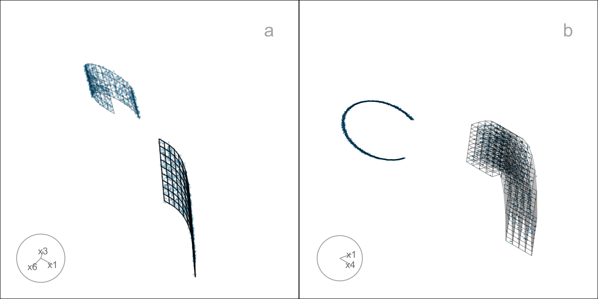
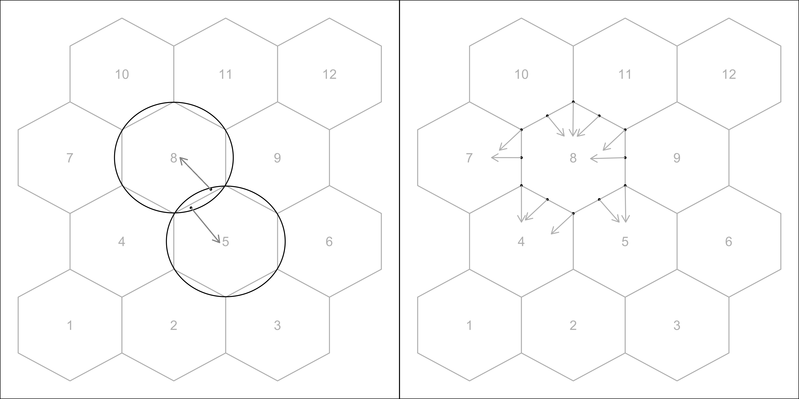
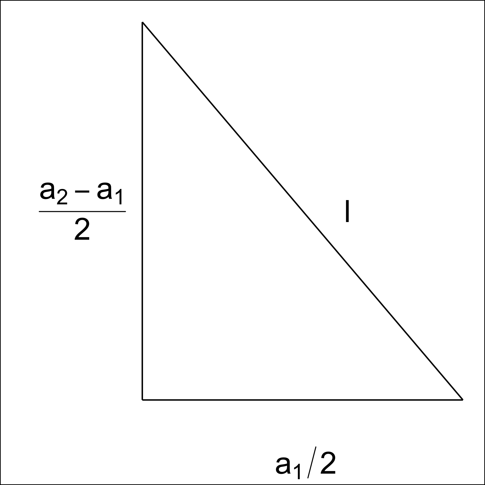
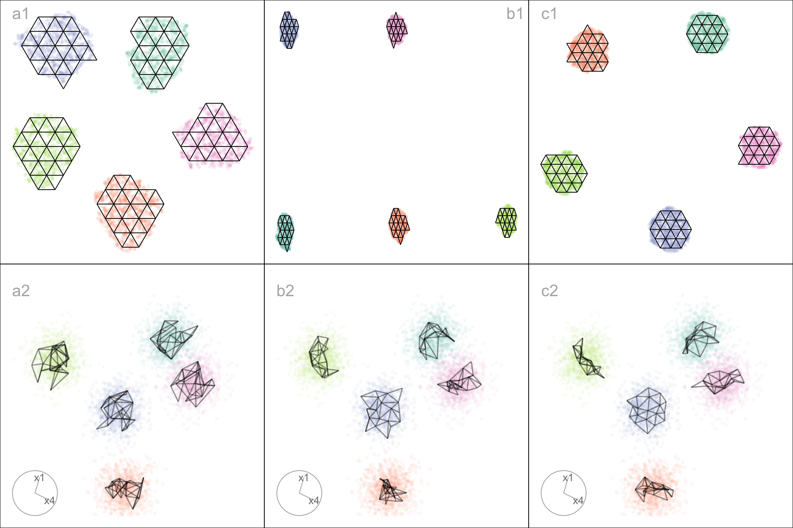
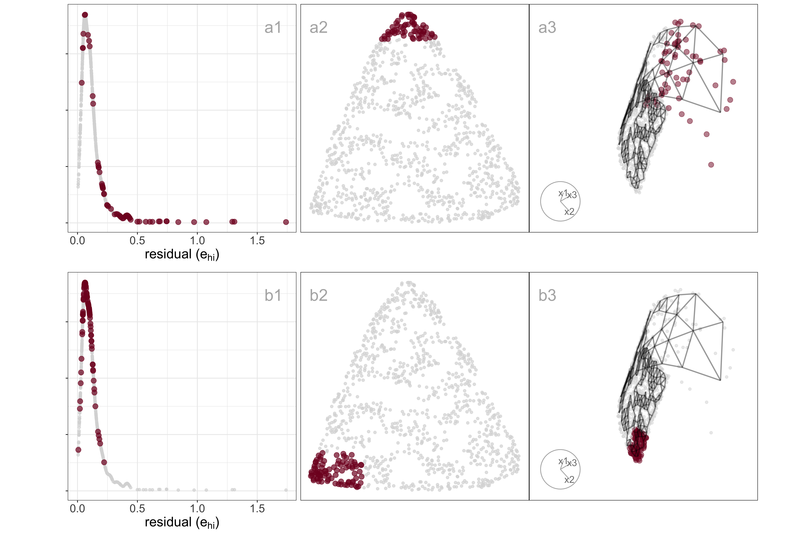
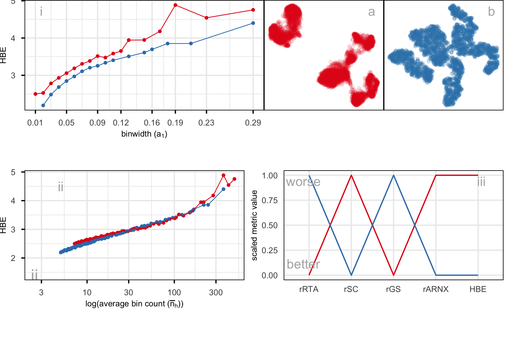
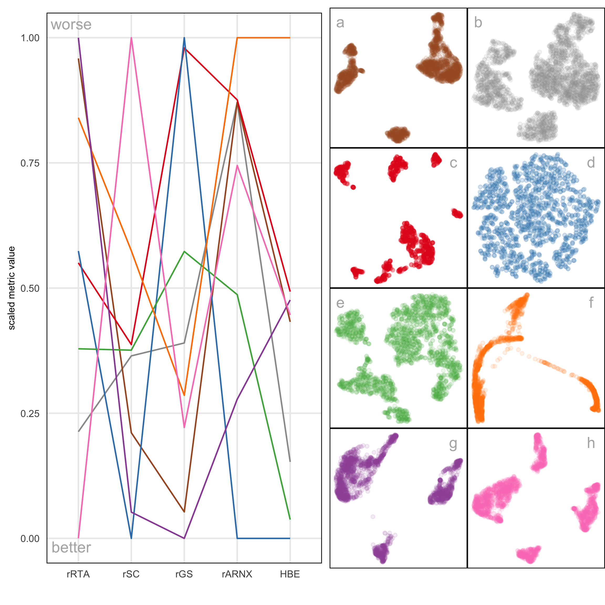
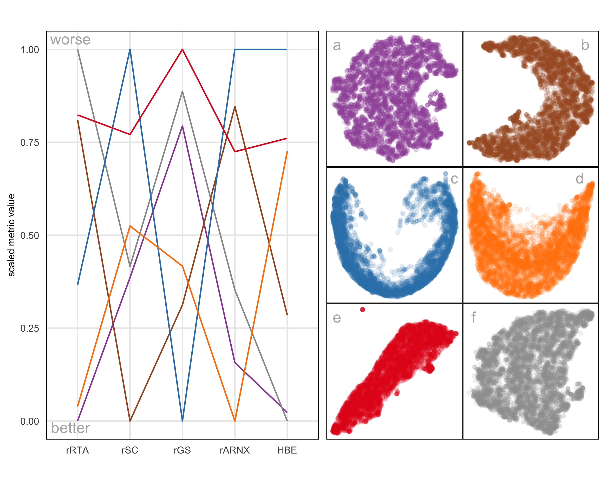

| Figure | NLDR method | Hyper-parameter(s) |
|---|---|---|
| 1a | UMAP | n_neighbors = 30, min_dist = 0.3 |
| 1b | UMAP | n_neighbors = 5, min_dist = 0.8 |
| 1c | UMAP | n_neighbors = 5, min_dist = 0.01 |
| 1d | tSNE | perplexity = 5 |
| 1e | tSNE | perplexity = 30 |
| 1f | PHATE | knn = 5 |
| 1g | TriMAP | n_inliers = 12, n_outliers = 4, n_random = 3 |
| 1h | PaCMAP | n_neighbors = 30, init = random, MN_ratio = 0.9, FP_ratio = 5 |
| 2 | tSNE | perplexity = 47 |
| 4a | tSNE | perplexity = 47 |
| 5b | tSNE | perplexity = 47 |
| 6 | tSNE | perplexity = 47 |
| 8a | tSNE | perplexity = 47 |
| 8b | tSNE | perplexity = 62 |
| 8c | UMAP | n_neighbors = 15, min_dist = 0.1 |
| 8d | PHATE | knn = 5 |
| 8e | TriMAP | n_inliers = 12, n_outliers = 4, n_random = 3 |
| 8f | PaCMAP | n_neighbors = 10, init = random, MN_ratio = 0.5, FP_ratio = 2 |
| 10a | UMAP | n_neighbors = 30, min_dist = 0.3 |
| 10b | UMAP | n_neighbors = 5, min_dist = 0.8 |
| 10c | UMAP | n_neighbors = 5, min_dist = 0.01 |
| 10d | tSNE | perplexity = 5 |
| 10e | tSNE | perplexity = 30 |
| 10f | PHATE | knn = 5 |
| 10g | TriMAP | n_inliers = 12, n_outliers = 4, n_random = 3 |
| 10h | PaCMAP | n_neighbors = 30, init = random, MN_ratio = 0.9, FP_ratio = 5 |
| 11a | UMAP | n_neighbors = 30, min_dist = 0.3 |
| 11e | tSNE | perplexity = 30 |
| 12a | tSNE | perplexity = 30 |
| 12b | tSNE | perplexity = 89 |
| 12c | UMAP | n_neighbors = 15, min_dist = 0.1 |
| 12d | PHATE | knn = 5 |
| 12e | TriMAP | n_inliers = 12, n_outliers = 4, n_random = 3 |
| 12f | PaCMAP | n_neighbors = 10, init = random, MN_ratio = 0.5, FP_ratio = 2 |
| 13a | tSNE | perplexity = 30 |
| 14a | tSNE | perplexity = 30 |
| A4a | tSNE | perplexity = 71 |
| A4b | UMAP | n_neighbors = 15, min_dist = 0.1 |
| A4c | PaCMAP | n_neighbors = 10, init = random, MN_ratio = 0.5, FP_ratio = 2 |
| A5 | tSNE | perplexity = 52 |
| A6a | UMAP | n_neighbors = 30, min_dist = 0.3 |
| A6b | tSNE | perplexity = 30 |
| A7a | UMAP | n_neighbors = 30, min_dist = 0.3 |
| A7b | tSNE | perplexity = 30 |
| A8a | UMAP | n_neighbors = 30, min_dist = 0.3 |
| A8b | tSNE | perplexity = 30 |
| A9a | UMAP | n_neighbors = 30, min_dist = 0.3 |
| A9b | UMAP | n_neighbors = 5, min_dist = 0.8 |
| A9c | UMAP | n_neighbors = 5, min_dist = 0.01 |
| A9d | tSNE | perplexity = 5 |
| A9e | tSNE | perplexity = 30 |
| A9f | PHATE | knn = 5 |
| A9g | TriMAP | n_inliers = 12, n_outliers = 4, n_random = 3 |
| A9h | PaCMAP | n_neighbors = 30, init = random, MN_ratio = 0.9, FP_ratio = 5 |
| A10a | tSNE | perplexity = 30 |
| A10b | tSNE | perplexity = 89 |
| A10c | UMAP | n_neighbors = 15, min_dist = 0.1 |
| A10d | PHATE | knn = 5 |
| A10e | TriMAP | n_inliers = 12, n_outliers = 4, n_random = 3 |
| A10f | PaCMAP | n_neighbors = 10, init = random, MN_ratio = 0.5, FP_ratio = 2 |
Appendix B — Appendix to “Choosing Better NLDR Layouts by Evaluating the Model in the High-dimensional Data Space”
B.1 Methods and hyper-parameters used to generate layouts
Table B.1 contains the list of methods and hyper-parameters used for each of the layouts shown in the paper.
B.2 Videos links
Animations of the tours that produced specific projections shown in some figures in the main paper are available on YouTube at the links given in Table B.2.
B.3 Notation
| Notation | Description |
|---|---|
| n, p, k | number of observations, variables, embedding dimension, respectively |
| \bm{X}, \bm{x} | p-dimensional data (population, sample) |
| \bm{y} | k-dimensional layout |
| P | orthonormal basis, generating a d\text{-}dimensional linear projection of p-dimensional data |
| T | true model |
| g | functional mapping from to , especially as prescribed by NLDR |
| \bm{\theta} | (Hyper-) parameters for NLDR method |
| r | ranges of the embedding components |
| C^{(j)} | j-dimensional bin centers |
| (b_1, b_2) | number of bins in each direction |
| (a_1, a_2) | binwidths, distance between centroids in each direction |
| (s_1, \ s_2) | starting coordinates of the hexagonal grid |
| q | buffer to ensure hexgrid covers data, proportion of data range, 0-1 |
| m | number of non-empty bins |
| b | number of hexagons in the grid |
| h | hexagonal id |
| l | side length |
| A | area |
| n_h | number of points in hexagon h (bin count) |
| w_h | standardized number of points in hexagon h (standardized bin counts) |
B.4 Scripts
| Folder | Script | Description |
|---|---|---|
| script | additional_functions.R | Helper functions to render the main paper. |
| script | evaluation.py | Python script implementing additional evaluation metrics such as RTA and GS. |
| script | nldr_code.R | Wrapper functions for running multiple NLDR methods (UMAP, tSNE, PHATE, PaCMAP, TriMAP) with different parameters. |
| two_nonlinear | 01_gen_data.R | Generates the 2NC7 dataset. |
| two_nonlinear | 02_gen_true_model.R | Creates the true structure of 2NC7 data. |
| two_nonlinear | 03_gen_embeddings.R | Computes multiple NLDR embeddings for the 2NC7 data. |
| two_nonlinear | 04_gen_mse_for_diff_methods.R | Computes HBE with varying bin widths (a_1) for all NLDR embeddings. |
| two_nonlinear | 05_gen_rm_lwd_mse.R | Computes HBE with varying low density bin cutoff for all three binwidth (a_1) choices. |
| two_nonlinear | 06_gen_model_with_tSNE.R | Fits the model for the layout a. |
| two_nonlinear | 07_example_evaluation_metrics.R | Calculates evaluation metrics for all NLDR layouts. |
| two_nonlinear | 08_gen_model_with_PHATE.R | Fits the model for the layout c. |
| five_gau_clusters | 01_five_gaussian_cluster_data_emb.R | Generates data and multiple NLDR embeddings. |
| five_gau_clusters | 02_gen_model_with_tSNE.R | Fits the model for the layout a. |
| five_gau_clusters | 03_gen_model_with_UMAP.R | Fits the model for the layout b. |
| five_gau_clusters | 04_gen_model_with_PaCMAP.R | Fits the model for the layout c. |
| c_shaped_dens_str | 01_gen_data.R | Generates the 2\text{-}D curved sheet dataset. |
| c_shaped_dens_str | 02_gen_embeddings_uni_dens.R | Generates multiple NLDR embeddings. |
| c_shaped_dens_str | 03_gen_model_with_tSNE.R | Fits the model for the tSNE layout. |
| pbmc3k | 01_obtain_pca_author.R | Obtains author's PCA results. |
| pbmc3k | 02_obtain_umap_authors.R | Obtains author's UMAP embeddings. |
| pbmc3k | 03_gen_umap_diff_param.R | Generates multiple UMAP embeddings with different hyper-parameter values. |
| pbmc3k | 04_gen_tsne_diff_param.R | Generates multiple tSNE embeddings with different hyper-parameter values. |
| pbmc3k | 05_gen_phate.R | Generates a PHATE embeddings with default hyper-parameters. |
| pbmc3k | 06_gen_trimap.R | Generates a TriMAP embeddings with default hyper-parameters. |
| pbmc3k | 07_gen_pacmap.R | Generates a PaCMAP embeddings with default hyper-parameters. |
| pbmc3k | 08_gen_mse_for_diff_methods.R | Computes HBE with varying bin widths (a_1) for all NLDR embeddings. |
| pbmc3k | 09_gen_scDEED.R | Generates UMAP embeddings from scDEED results. |
| pbmc3k | 10_pre_process_for_embedding.R | Generates PBMC3k data used for scDEED results. |
| pbmc3k | 11_gen_mse_for_diff_tsne_scD.R | Computes HBE with varying bin widths (a_1) for tSNE embeddings. |
| pbmc3k | 12_gen_mse_for_diff_umap_scD.R | Computes HBE with varying bin widths (a_1) for UMAP embeddings. |
| pbmc3k | 13_gen_model_with_UMAP.R | Fits the model for the layout a. |
| pbmc3k | 14_gen_model_with_tSNE.R | Fits the model for the layout e. |
| pbmc3k | 15_gen_model_with_UMAP_scD.R | Fits the model for the layout a. |
| pbmc3k | 16_gen_model_with_tSNE_scD.R | Fits the model for the layout b. |
| pbmc3k | 17_evaluation_metrics.R | Calculates evaluation metrics for all NLDR layouts. |
| pbmc3k | 18_evaluation_metrics_scD.R | Calculates evaluation metrics for all NLDR layouts. |
| mnist | 01_data_preprocessing.R | Computes first 10 principal components and save data. |
| mnist | 02_gen_diff_embeddings.R | Generates multiple NLDR embeddings. |
| mnist | 03_gen_mse_for_diff_methods.R | Computes HBE with varying bin widths (a_1) for all NLDR embeddings. |
| mnist | 04_gen_model_with_tSNE.R | Fits the model for the layout a. |
| mnist | 05_evaluation_metrics.R | Calculates evaluation metrics for all NLDR layouts. |
| mnist | 06_link_brush_layout_e.R | Creates interactive linked brushing with layout e. |
B.5 Generating the 2NC7 data
This data is constructed by simulating two clusters, each consisting of 1000 observations. The C-shaped cluster is generated from \theta \sim U(\text{-}3\pi/2, 0), X_1 = \sin(\theta), X_2 \sim U(0, 2) (adding thickness to the C), X_3 = \text{sign}(\theta) \times (\cos(\theta) - 1), X_4 = \cos(\theta). Observations lie on a manifold in . The other cluster is from X_1 \sim U(0, 2), X_2 \sim U(0, 3), X_3 = \text{-}(X_1^3 + X_2), and X_4 \sim U(0, 2). It is also curved, but observations lie on a manifold in . Three more variables, X_5, X_6, X_7, that are small amounts of pure noise are added. We would consider T=(X_1, X_2, X_3, X_4) to be the geometric structure (true model) that we hope to capture (Figure B.1).

B.6 Computing hexagon grid configurations
Given range of embedding component, r_2, number of bins along the x-axis, b_1, and buffer proportion, q, hexagonal starting point coordinates, s_1 = \text{-}q, and s_2 = \text{-}qr_2. The purpose is to find width of the hexagon, a_1 and number of bins along the y-axis, b_2.
Geometric arguments give rise to the following constraints.
\text{min }a_1 \text{ s.t.}
s_1 - \frac{a_1}{2} < 0, \tag{B.1}
s_1 + (b_1 - 1) \times a_1 \geq 1, \tag{B.2}
s_2 - \frac{a_2}{2} < 0, \tag{B.3}
s_2 + (b_2 - 1) \times a_2 \geq r_2. \tag{B.4}
Since a_1 and a_2 are distances,
a_1, a_2 > 0. Also, (s_1, s_2) \in (\text{-}0.1, \text{-}0.05) as these are multiplicative offsets in the negative direction.
Equation B.1 can be rearranged as,
a_1 > 2s_1
which given s_1 < 0 and a_1 > 0 will always be true. The same logic follows for Equation B.3 and substituting a_2 = \sqrt{3}a_1/{2}, and s_2 = \text{-}qr_2 to Equation B.3 can be written as,
a_1 > -\frac{4}{\sqrt{3}}qr_2
Also, substituting a_2 = \sqrt{3}a_1/{2}, s_2 = \text{-}qr_2 and rearranging Equation B.4 gives:
a_1 \geq \frac{2(r_2 + qr_2)}{\sqrt{3}(b_2 - 1)}. \tag{B.5}
Similarly, substituting s_1 = \text{-}q Equation B.2 becomes,
a_1 \geq \frac{(1 + q)}{(b_1 - 1)}. \tag{B.6}
This is a linear optimization problem. Therefore, the optimal solution must occur on a vertex. So, by setting Equation B.5 equals to Equation B.6 gives,
\frac{2(r_2 + qr_2)}{\sqrt{3}(b_2 - 1)} = \frac{(1 + q)}{(b_1 - 1)}.
After rearranging this,
b_2 = 1 + \frac{2r_2(b_1 - 1)}{\sqrt{3}}
and since b_2 should be an integer,
b_2 = \Big\lceil1 +\frac{2r_2(b_1 - 1)}{\sqrt{3}}\Big\rceil. \tag{B.7}
Furthermore, with known b_1 and b_2, by considering Equation B.2 or Equation B.4 as the binding or active constraint, can compute a_1.
If Equation B.2 is active, then,
\frac{(1 + q)}{(b_1 - 1)} < \frac{2(r_2 + qr_2)}{\sqrt{3}(b_2 - 1)}.
Rearranging this gives,
r_2 > \frac{\sqrt{3}(b_2 - 1)}{2(b_1 - 1)}.
Therefore, if this equality is true, then a_1 = \frac{(1+q)}{(b_1 - 1)}, otherwise, a_1 = \frac{2r_2(1+q)}{\sqrt{3}(b_2 - 1)}.
B.7 Binning the data
Points are assigned to the bin they fall into based on the nearest centroid. If a point is equidistant from multiple centroids, it is assigned to the centroid with the smallest bin ID.

B.8 Area of a hexagon
The area of a hexagon is defined as A = 3\sqrt{3}l^2/2, where l is the side length of the hexagon. l can be computed using a_1 and a_2.

By applying the Pythagorean theorem, we obtain,
l^2 = \left(\frac{a_1}{2}\right)^2 + \left(\frac{a_2 - l}{2}\right)^2. Next, rearranging the terms, we get,
l^2 - \left(\frac{a_2 - l}{2}\right)^2 = \left(\frac{a_1}{2}\right)^2,
\left[l - \left(\frac{a_2 - l}{2}\right)\right]\left[l + \left(\frac{a_2 - l}{2}\right)\right] = \left(\frac{a_1}{2}\right)^2,
3l^2 + 2a_2l - (a_1^2 + a_2^2) = 0.
Finally, by solving the quadratic equation, we compute,
l = \frac{-2a_2 \pm \sqrt{4a_2^2 - 24[-(a_1^2 + a_2^2)]}}{6},
l = \frac{-a_2 \pm \sqrt{a_2^2 - 6[-(a_1^2 + a_2^2)]}}{3},
where l > 0.
B.9 Curiosities about NLDR results discovered by examining the model in the data space
With the drawing of the model in the data, several interesting differences between NLDR methods can be observed.
Some methods appear to order points in the layout
The model representations generated from some NLDR methods, especially PaCMAP, are unreasonably flat or like a pancake. A simple example of this can be seen with data simulated to contain five Gaussian clusters. Each cluster is essentially a ball in , so there is no representation, rather the model in each cluster should resemble a crumpled sheet of paper that fills out .
Figure B.4 a1, b1, c1 show the layouts for (a) tSNE, (b) UMAP, and (c) PaCMAP, respectively. The default hyper-parameters for each method are used. In each layout we can see an accurate representation where all five clusters are visible, although with varying degrees of separation.
The models are fitted to each these layouts. Figure B.4 a2, b2, c2 show the fitted models in a projection of the space, taken from a tour. These clusters are fully in nature, so we would expect the model to be a crumpled sheet that stretches in all four dimensions. This is what is mostly observed for tSNE and UMAP. The curious detail is that the model for PaCMAP is closer to a pancake in shape in every cluster! This single projection only shows this in three of the five clusters but if we examine a different projection the other clusters exhibit the pancake also. While we don’t know what exactly causes this, it is likely due to some ordering of points in the PaCMAP layout that induces the flat model. One could imagine that if the method used principal components on all the data, that it might induce some ordering that would produce the flat model. If this were the reason, the pancaking would be the same in all clusters, but it is not: The pancake is visible in some clusters in some projections but in other clusters it is visible in different projections. It might be due to some ordering by nearest neighbors in a cluster. The PaCMAP documentation doesn’t provide any helpful clues. That this happens, though, makes the PaCMAP layout inadequate for representing the high-dimensional data.

Sparseness creates a contracted layout
Differences in density can arise by sampling at different rates in different subspaces of . For example, the data shown in Figure B.5 all lies on a curved sheet in , but one end of the sheet is sampled densely and the other very sparsely. It was simulated to illustrate the effect of the density difference on layout generated by an NLDR, illustrated using the tSNE results, but it happens with all methods.
Figure B.5 (a2, b2) shows a layout for tSNE created using the default hyper-parameters. One would expect to see a rectangular shape if the curved sheet is flattened, but the layout is triangular. The other two displays show the residuals as a dot density plot (a1, b1), and a projection of the data and the model from (a3, b3). Using linked brushing between the plots, we can highlight points in the tSNE layout, and examine where they fall in the original . The darker (maroon) points indicate points that have been highlighted by linking. In row a, the points at the top of the triangle are highlighted, and we can see these correspond to higher residuals, and also to all points at the low density end of the curved sheet. In row b, points at the lower left side of the triangle are highlighted which corresponds to smaller residuals and one corner of the sheet at the high density end of the curved sheet.
The tSNE behaviour is to squeeze the low density area of the data together into the layout. This is common in other NLDR methods also, which means analysts need to be aware that if their data is not sampled relatively uniformly, apparent closeness in the may correspond to sparseness in .

B.10 PBMC3k: comparison with results of scDEED recommendations
As we were writing this paper Xia et al. (2023) appeared proposing a new method called scDEED helping to assess the validity of a embedding. scDEED calculates a reliability score for each cell embedding based on the similarity between the cell’s embedding neighbors and its neighbors prior to embedding. A low reliability score suggests a dubious embedding. It can help in the deciding on optimal hyper-parameters. Here we illustrate how our method compares with the results from scDEED.
Note that Xia et al. (2023) uses a different PBMC dataset than that used by Chen et al. (2024), shown by us in the main paper example, which is why this comparison is shown here and not in the main paper. Their data contains 31,021 cells including cell type labels, and the gene expression levels were in the unit of log-transformed UMI count per 10,000. They focused on three sequencing methods (inDrops, DropSeq, and SeqWell) and four common cell types Cytotoxic T cell, CD4+T cell, CD14+ Monocyte, and B cell. Pre-processing follows the process in Xia et al. (2023) again using the Human Peripheral Blood Mononuclear Cells (PBMC) data.
For illustration purposes, we only selected cells generated with inDrops (n=5858 cells). Also, Xia et al. (2023) used first 9 principal components to generate the UMAP and tSNE with default hyper-parameters. The objective is to what scDEED suggests is the best layout with what HBE would choose. Layout a (Figure B.6) is generated from the hyper-parameters suggested by Chen et al. (2024), and layout b (Figure B.6) is with suggested hyper-parameters by scDEED to be more accurate. The HBE vs binwidth (a_1) plot (Figure B.6) illustrates that our approach would suggest that scDEED is correct here, that layout b is more accurately reflecting the cluster structure in the PBMC data. This is also supported by examining the models in the data space as shown in Figure B.7.

B.11 Compare HBE with existing evaluation metrics
Figure B.8 and Figure B.9 compare HBE with commonly used evaluation metrics such as rRTA, rARNX, rSC, and rGS across multiple NLDR layouts. These visual comparisons highlight that HBE behaves differently from these existing metrics due to the different settings involved.

